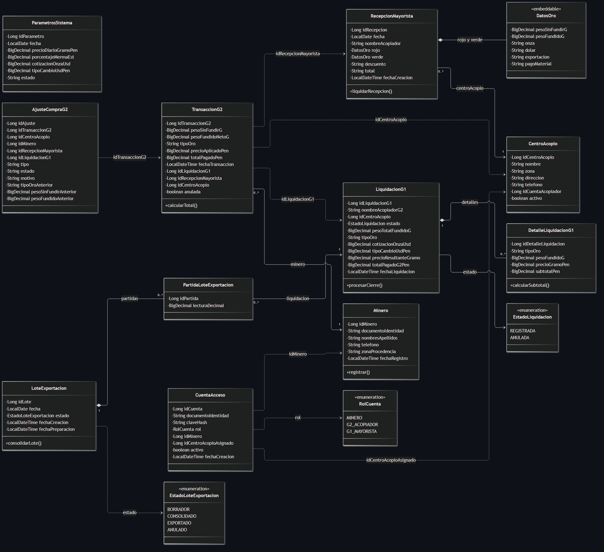

ADMINISTRACIÓN DE BASE DE DATOS II · ORACLE 21c
Arquitectura de Base de Datos
Diseño relacional integral de 22 tablas, particionamiento físico multinivel (Hash, List, Range) y consistencia transaccional ACID en Oracle Database 21c.
Modelo Relacional Integral de 22 Tablas (Oracle 21c)
Esquema físico normalizado en 3FN para SITRA-ORO. Conecta catálogos maestros (MINEROS, CENTROS_ACOPIO), módulo de compra artesanal (COMPRAS_G2), valorizaciones y lotes (MAYORISTA_RECEPCIONES, LIQUIDACIONES_G1) y seguridad RBAC (CUENTAS_ACCESO).

Esquema Relacional Maestro: 22 tablas con claves primarias identity, claves foráneas 1:N y restricciones de negocio.
🔍 Haz clic en el diagrama para pantalla completa (Zoom 2K)